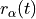
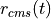
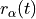
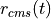

10. Analysis: Structure
This section has the following Plugins:
10.1. Area Per Molecule
available for trajectories only

area vectors
Format: drop-down
Default: a, b
Description: <insert>
molecule name
Format: str
Default: DMPC
Description: the name of the molecules for which the calculation will take place. The name inputted here must match a name that MMTK assigned to inside the NetCDF file.
10.2. Coordination Number
Theory and implementation
In chemistry, the Coordination Number (CN) is the total number of neighbours of a central atom in a molecule or ion. The definition used in MDANSE is somewhat different and can be seen as an extension of as the former definition. Indeed, in MDANSE, the CN is not defined over one defined central atom but around the centres of gravity of a set of group of atoms. So, if only one group made of only atom is selected for the analysis, then, the definition is the same as the original definition. In that context, the CN is defined as:
(10.1)
where NG is the number of groups of atoms, Nspecies is the number of species found in the system and ngI(r) is the CN defined for species I defined as the number of atoms of species I found in a shell of width dr at a distance r of the center of gravity of the group of atom g.
MDANSE allows one to compute the CN on a set of equidistantly spaced distances at different times
(10.2)
where Nr and Nframes are respectively the number of distances and times at which the CN is evaluated and
(10.3)
is the number of atoms of species I found within [rm, rm + dr] at frame f from the centre of gravity of group g.
From these expressions, several remarks can be done. Firstly, the Eqs. 79 and 80 can be restricted to intramolecular and intermolecular distances only. Secondly, these equations can be averaged over the selected frames providing a time averaged intra and intermolecular CN. Finally, the same equations (time-dependent and time-averaged) can be integrated over r to provide a cumulative CN. MDANSE computes all these variations.
The concept of CN is useful for structure-related analysis. It can reveal for instance some packing effects that may have occurred during the simulation.
GUI
available for trajectories only

r values
from
Format: int
Default: 0
Description: the minimum distance from a central particle in nanometers taken into consideration. Only particles at that distance or further will be counted.
to
Format: int
Default: 10
Description: the maximum distance from a central particle in nanometers. Only particles up to and including this distance will be counted.
by step of
Format: int
Default: 1
Description: the size of the step in nanometers used to generate a range of values between the above two extremes above. Eg. using the default r-values, the range will be {0, 1, 2, 3, 4, 5, 6, 7, 8, 9, 10}.
10.3. Density Profile
available for trajectories only

Format: drop-down
Default: c
Description: the simulation box axis that Density Profile will be calculated along.
dr
Format: float
Default: 0.01
Description: during Density Profile calculation the axis specified in the axis field is divided into a number of bins along its length. dr specifies how large each of these bins will be.
10.4. Eccentricity
available for trajectories only

10.5. Molecular Trace
available for trajectories only

spatial resolution
Format: float
Default: 0.1
Description: the resolution with which Molecular Trace is calculated. It is used to determine how many grid points are used to represent a unit of length.
10.6. Pair Distribution Function
Theory and implementation
The Pair Distribution Function (PDF) is an example of a pair correlation function, which describes how, on average, the atoms in a system are radially packed around each other. This proves to be a particularly effective way of describing the average structure of disordered molecular systems such as liquids. Also in systems like liquids, where there is continual movement of the atoms and a single snapshot of the system shows only the instantaneous disorder, it is extremely useful to be able to deal with the average structure.
The PDF is useful in other ways. For example, it is something that can be deduced experimentally from x-ray or neutron diffraction studies, thus providing a direct comparison between experiment and simulation. It can also be used in conjunction with the interatomic pair potential function to calculate the internal energy of the system, usually quite accurately.
Mathematically, the PDF can be computed using the following formula:
(10.4)
where Nspecies is the number of selected species, nI
and nJ are respectively the numbers of atoms of species I and
J,  I and J respectively the weights for species
I and J (see Section ?? for more details) and
I and J respectively the weights for species
I and J (see Section ?? for more details) and
(10.5)
is the partial PDF for I and J species that can be defined as:
(10.6)
where  J is the density of atom of species J and
J is the density of atom of species J and
(10.7)
is the mean number of atoms of species J in a shell of width dr at
distance r of the atom  of species I.
of species I.
From the computation of PDF, two related quantities are also calculated; the Radial Distribution Function (RDF), defined as
(10.8)
and the Total Correlation Function (TCF), defined as
(10.9)
where 0 is the average atomic density, which is defined as
(10.10)
where N is the total number of atoms in the system and V the volume of the simulation.
All these quantities are initially calculated as intramolecular and intermolecular parts for each pair of atoms, which are then added to create the total PDF/RDF/TCF for each pair of atoms, as well as the total intramolecular and total intermolecular values. Lastly, the total functions are computed. Please note, however, that in the case of TCF, the below set of equations has been chosen, which will return results that differ from those of nMOLDYN.
(10.11)
(10.12)
(10.13)
GUI
available for trajectories only

r values
from
Format: int
Default: 0
Description: the minimum distance from a central particle in nanometers taken into consideration. Only particles at that distance or further will be counted.
to
Format: int
Default: 10
Description: the maximum distance from a central particle in nanometers. Only particles up to and including this distance will be counted.
by step of
Format: int
Default: 1
Description: the size of the step in nanometers used to generate a range of values between the above two extremes above. Eg. using the default r-values, the range will be {0, 1, 2, 3, 4, 5, 6, 7, 8, 9, 10}.
10.7. Root Mean Square Deviation
Theory and implementation
The Root Mean-Square Deviation (RMSD) is maybe the most popular estimator of structural similarity. It is a numerical measure of the difference between two structures that can be defined as:
(10.14)
where N_ is the number of atoms of the system, and r_(t) and r_(tref )
are respectively the position of atom at time t and tref where tref is
a reference time usually chosen as the first step of the simulation.
Typically, RMSD is used to quantify the structural evolution of the
system during the simulation. It can provide precious information about
the system especially if it reached equilibrium or conversely if major
structural changes occurred during the simulation.
In Molecular Dynamics Analysis for Neutron Scattering Experiments (MDANSE), RMSD is computed using the discretized version of equation 83:
(10.15)
where Nt is the number of frames and
(10.16)
is the time step.
GUI
available for trajectories only

reference frame
Format: int
Default: 0
Description: the number of the frame which will be used as reference for the calculation. The deviation will be calculated as how it deviates from the values in this frame.
10.8. Root Mean Square Fluctuation
available for trajectories only

10.9. Radius Of Gyration
Theory and implementation
Radius Of Gyration (ROG) is the name of several related measures of the size of an object, a surface, or an ensemble of points. It is calculated as the Root Mean Square Distance between the system and a reference that can be either the centre of gravity of the system either a given axis. In MDANSE, the reference is chosen to be the centre of gravity of the system under study. Mathematically, it can be defined as:
(10.17)
where  is the number of atoms of the system, and  and
 are respectively the position of atom and the
centre of mass of the system at time t.
is the number of atoms of the system, and  and
 are respectively the position of atom and the
centre of mass of the system at time t.
ROG describes the overall spread of the molecule and as such is a good measure for the molecule compactness. For example, it can be useful when monitoring folding process.
In MDANSE, ROG is computed using the discretized version of equation 85:
(10.18)
where Nt is the number of frames and Δt is the time step.
GUI
available for trajectories only

10.10. Solvent Accessible Surface
available for trajectories only

n sphere points
Format: int
Default: 1000
Description: Solvent Accessible Surface calculation involves the creation of a mesh of points equidistant form each atom or molecule. This field determines how many of these points should be created.
probe radius
Format: float
Default: 0.14
Description: (in nanometers) affects the observed surface area. Smaller probe radius detects more detail and therefore reports larger surface area. The default value is approximately equal to the radius of a water molecule.
10.11. Spatial Density
Theory and implementation
The Spatial Density (SD) can be seen as a generalization of the pair distribution function. Indeed, pair distribution functions are defined as orientationally averaged distribution functions. Although these correlation functions reflect many key features of the short-range order in molecular systems, it should be realized that an average spatial assembly of non-spherical particles cannot be uniquely characterized from these one-dimensional functions. So, structural models postulated for the molecular ordering in non-simple systems based only on one-dimensional PDF will always be somewhat ambiguous. The goal of SD analysis is to provide greater clarity in the structural analysis of molecular systems by utilizing distribution function which span both the radial and angular coordinates of the separation vector. This can provide useful information about the average local structure in a complex system.
MDANSE allows one to compute the SD in spherical coordinates on a set of concentric shells surrounding the centres of mass of selected triplets of atoms using the formula:
(10.19)
(10.20)
where Ntriplets and Ngroups are respectively the
number of triplets and groups, rl, θm and φn
are the spherical coordinates at which the SD is evaluated,
Nr,  and
and  are respectively the number of discrete r, θ and φ values and
ntg(rl, θm, φn) is the number of
group of atoms of type g whose centres of mass is found to be in the
volume element defined by [r, r + dr], [θ, θ + dθ] and [φ, φ + dφ] in
the spherical coordinates basis cantered on the centre of mass of
triplet t. So technically, MDANSE proceeds more or less in the
following way:
are respectively the number of discrete r, θ and φ values and
ntg(rl, θm, φn) is the number of
group of atoms of type g whose centres of mass is found to be in the
volume element defined by [r, r + dr], [θ, θ + dθ] and [φ, φ + dφ] in
the spherical coordinates basis cantered on the centre of mass of
triplet t. So technically, MDANSE proceeds more or less in the
following way:
defines the centre of mass
(10.21)

for each triplet of atoms,
defines the centre of mass
(10.22)

for each group of atoms,
constructs an oriented orthonormal basis
(10.23)

cantered on each ct, this basis is defined from the three vectors v1, v2, v3,
expresses the cartesian coordinates of each cg in each Rt,
transforms these coordinates in spherical coordinates,
discretizes the spherical coordinates in rl, θm and φn,
does
(10.26)


GUI
available for trajectories only

spatial resolution
Format: float
Default: 0.1
Description: the resolution with which Spatial Density is calculated. It is used to determine how many grid points are used to represent a unit of length.
reference basis
Format: drop-down
Default: None
Description: can be used exactly like Axis Selection. <insert> what it does
target molecule
Format: drop-down
Default: None
Description: can be used exactly an Atom Selection. Allows for a subset of particles to be selected on which the analysis will be performed. More information in Atom Selection.
10.12. Static Structure Factor
Theory and implementation
This analysis is a shortcut to obtain the static coherent structure factor defined as S(q) = Fcoh(q, t = 0). It uses exactly the same procedure as the one defined in the Dynamic Coherent Structure Factor section.
GUI
available for trajectories only

r values
from
Format: int
Default: 0
Description: the minimum distance from a central particle in nanometers taken into consideration. Only particles at that distance or further will be counted.
to
Format: int
Default: 10
Description: the maximum distance from a central particle in nanometers. Only particles up to and including this distance will be counted.
by step of
Format: int
Default: 1
Description: the size of the step in nanometers used to generate a range of values between the above two extremes above. Eg. using the default r-values, the range will be {0, 1, 2, 3, 4, 5, 6, 7, 8, 9, 10}.
q values
from
Format: int
Default: 0
Description: the minimum value used to generate the range of q values.
to
Format: int
Default: 10
Description: the maximum value used to generate the range of q values.
by step of
Format: int
Default: 1
Description: the step size value used to generate the range of q values.
10.13. Voronoi
available for trajectories only

apply periodic_boundary_condition
Format: bool
Default: True
Description: determines if the periodic boundary conditions is applied to the Voronoi cell.
pbc border size
Format: float
Default: 0.0
Description: <insert>
10.14. Xray Static Structure Factor
available for trajectories only

r values
from
Format: int
Default: 0
Description: the minimum distance from a central particle in nanometers taken into consideration. Only particles at that distance or further will be counted.
to
Format: int
Default: 10
Description: the maximum distance from a central particle in nanometers. Only particles up to and including this distance will be counted.
by step of
Format: int
Default: 1
Description: the size of the step in nanometers used to generate a range of values between the above two extremes above. Eg. using the default r-values, the range will be {0, 1, 2, 3, 4, 5, 6, 7, 8, 9, 10}.
q values
from
Format: int
Default: 0
Description: the minimum value used to generate the range of q values.
to
Format: int
Default: 10
Description: the maximum value used to generate the range of q values.
by step of
Format: int
Default: 1
Description: the step size value used to generate the range of q values.